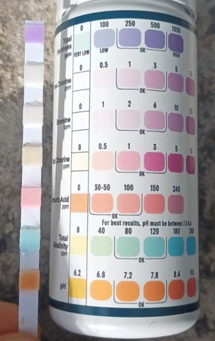
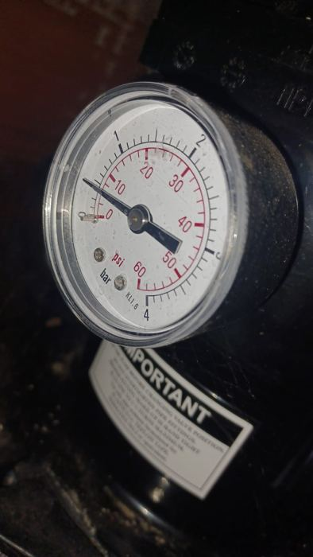

Pool: once a week
Green water is OK for now. Nobody swims in winter.

1. Pump plugged inIf you unplugged it, plug it back in.


2. Test stripDip it, hold it next to the bottle, send a photo on WhatsApp.


3. GaugeNeedle above 1? Send a photo.
Please no chlorine unless we ask.
More details
Plan
NowKeep it steady. Pump runs around midday by timer.
JanuaryBig clean-up on the next visit.
SpringClear water, ready to swim.
Why the pump matters
Algae grow in still water. When the water moves, chlorine reaches every corner and the filter catches the dirt.
Current readings (21 Nov)
- Free chlorine about 0: used up quickly
- pH, alkalinity, hardness: OK
- Stabiliser (cyanuric acid) probably too high
- Filter gauge about 0.35 bar with pump running
Read from test strip photos, so only approximate.
Message us right away if
- the pump is loud, hot, leaking or won't start
- the gauge needle is above 1
Leaves
If there is time, take floating leaves out with the net. They feed the algae.